Lost Heritage
All of these structures below have been demolished, lost or ruined. Click above to see where they would be located today.West Parade Shelters
West Parade, 1903-1977. Located opposite the Clock Tower, this once elegant Edwardian structure was a functioning bandstand then a sole shelter from about 1920.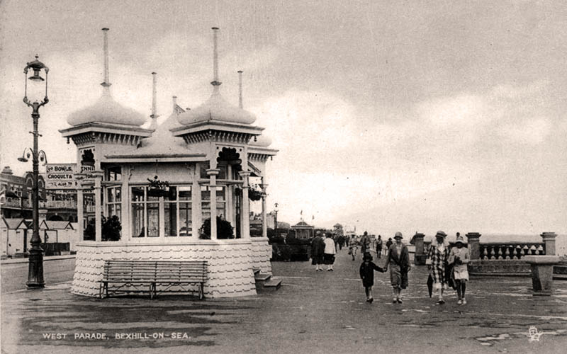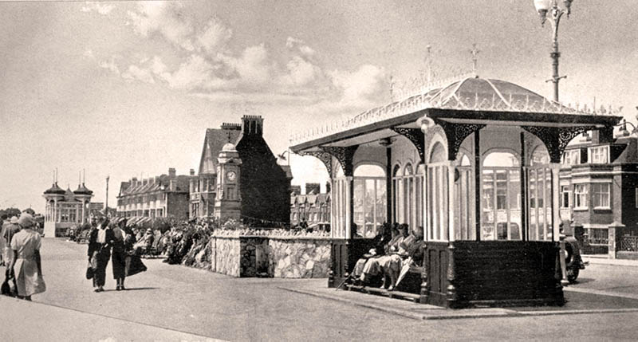
Edwardian Shelters on West Parade, 1925 / 1935.
© Bexhill Museum
Metropole Hotel
West Parade, 1897-1955. Architect Joseph Wall, opened in May 1900. 160 bedrooms, smoking-room, billard-room, tennis courts and electric lifts.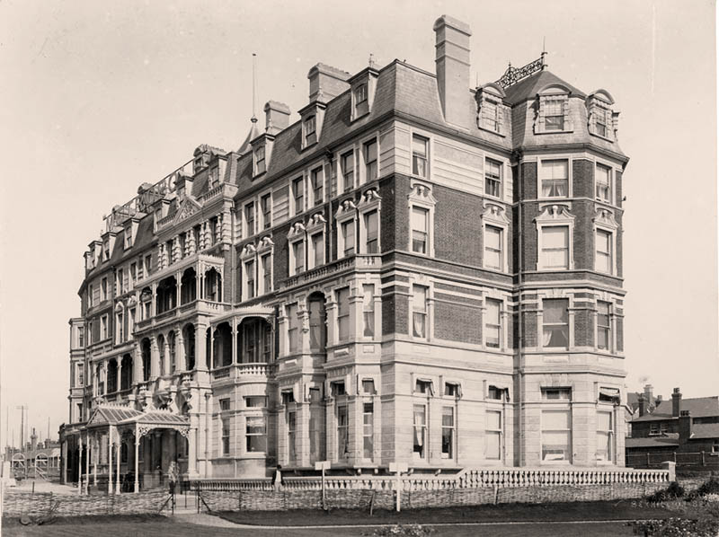
Metropole Hotel from the south, c1900.
© Bexhill Museum
Memorial Fountain
1913-1963. Following the death of the Nripendra Narayan Maharaja of Cooch Behar on 18th September 1911, a memorial fountain was subsequently erected by the Coastguard Cottages behind the Colonnade.[19]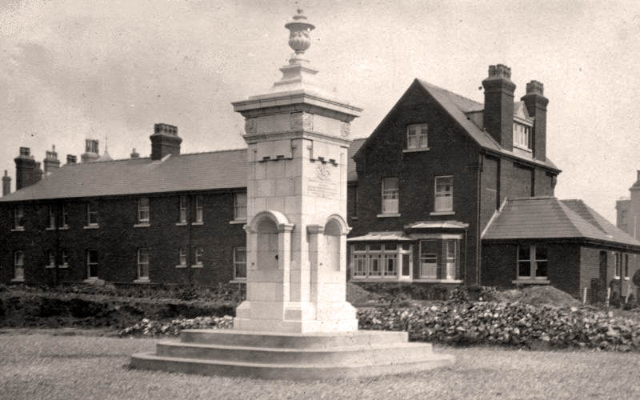
Memorial Fountain and Coastguard Cottages, 1913.
© Bexhill Museum
Marina Court
Marina Court Avenue, 1901-1970. Residential apartments designed by Paul Hoffman, with letting for shops on the ground floor. Opened with hydraulic lifts and electric lighting which were still in their infancy at the time.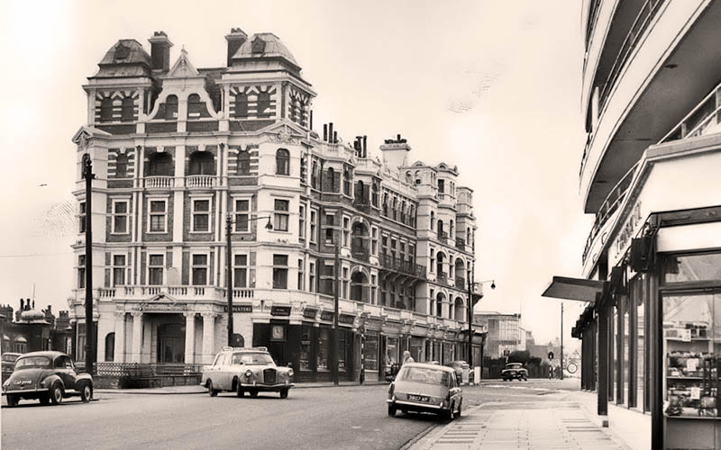
Marina Court, June 1965.
© Bexhill Museum
Marine Hotel
Marina, 1895-1954. Another Joseph Wall design, changed its name to Roberts Marine Mansions from 1903 until its demolition in 1954. 60 bedrooms.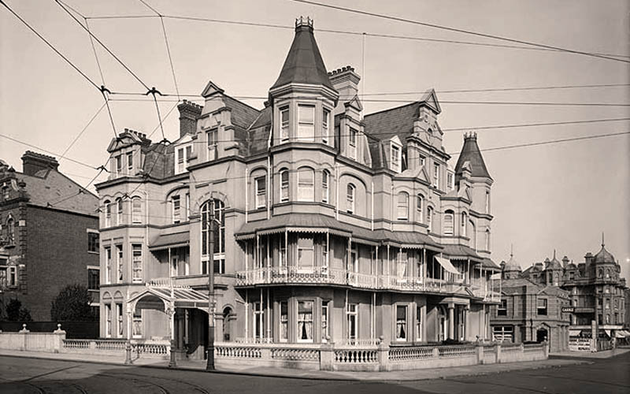
Roberts Marine Mansions - notice the tramway, 1913.
© Adolphe Augustus Boucher
Kursaal
East Parade, 1896-1936. Bexhill's first premier entertainment venue, this oriental designed building was also Bexhill's only pier. Later renamed to the Bexhill Pavilion in 1916 due to anti-German feeling during the war. Demolished after the De La Warr Pavilion became established.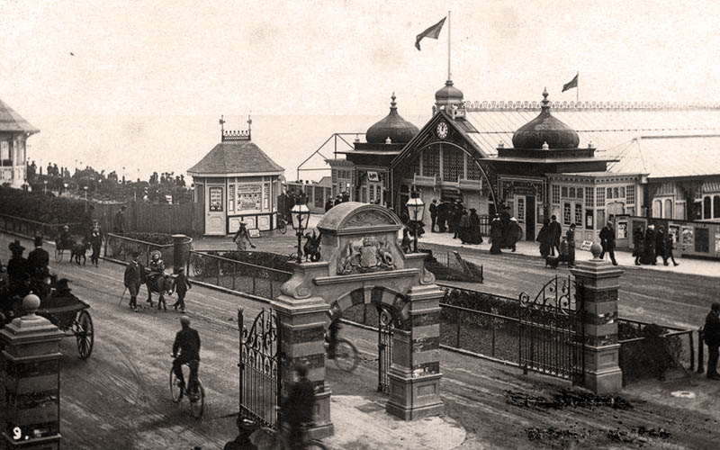
Kursaal and De La Warr Gates, c1900.
© Bexhill Museum
Granville Hotel
Sea Road, 1902-2003. Opened its doors for guests in 1905 and closed in 1966. Reopened as The Grand Hotel until it's final closure in 2000.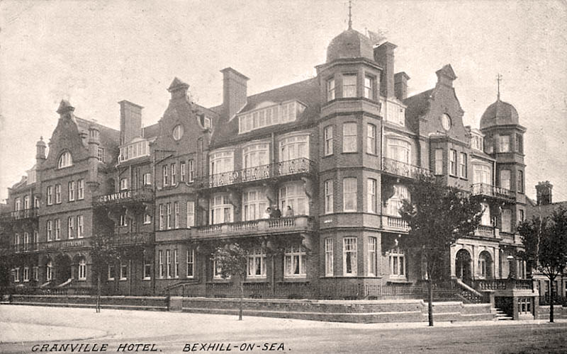
Postcard of the Granville Hotel, 1915.
Hotel Riposo
Dorset Road South, 1901-1961. Often seen in photographs of the early 1900 motor racing trials and popular with golfers visiting the Golf Links course adjacent. Replaced with Cavendish Court.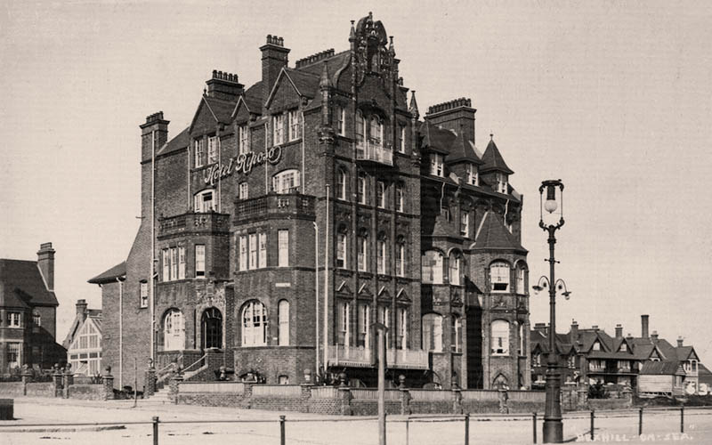
Hotel Riposo, c1910.
Ritz Cinema
Buckhurst Road, 1937-1962. Built on the site of a skating rink. Art Deco design by Samuel Beverley, B.A. Stevens and Frank T. Verity. Union Cinemas hosted a screen with seating for 1,142 people. Closed December 1961.[24]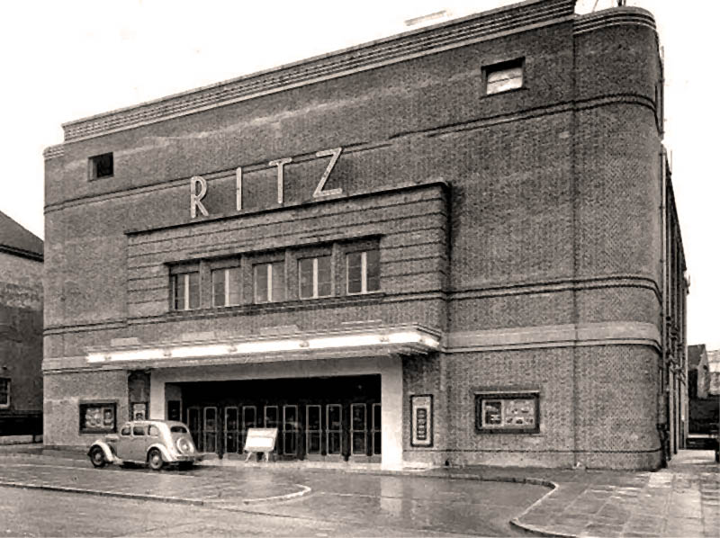
Ritz Cinema, 1937.
© West Marina To Hastings Pier
Metropolitan Convalescent Home
Upper Sea Road, Old Town, 1881-1988. The convalescent home was run by a London charity and changed to women only from 1905, men were moved to a similar place in Cooden Sea Road.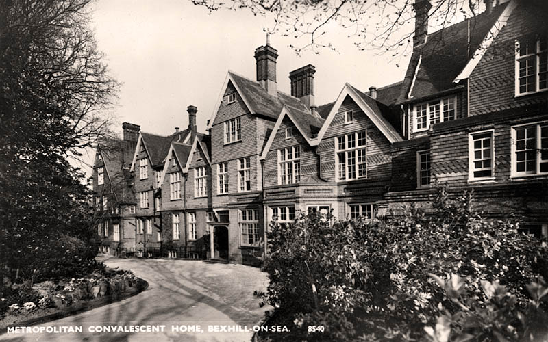
Metropolitan Convalescent Home for Women, 1930.
© Bexhill Museum
Manor House
De La Warr Road, Old Town, 1250-1967. The first manor on this land was built just after the Norman Conquest where it was soon named Bishops' Palace. Rebuilt in 1250 after damage from a storm and remained under church ownership until 1590.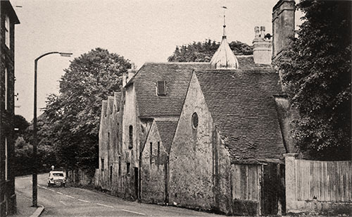
Manor House, c1960.
© Story of Bexhill, L.J. Bartley
Sidley Station
Holliers Hill, 1902-1971. Located opposite the Pelham Hotel, the building contained a booking, ticket, parcel and stationmaster’s office; two waiting rooms and toilets.[26]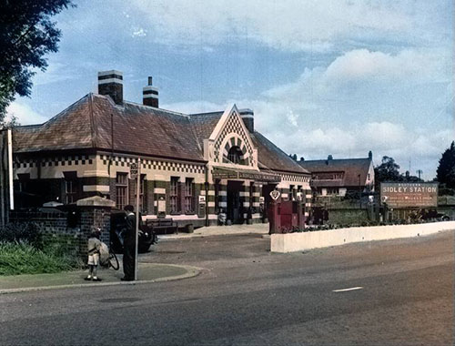
Sidley Station and garage, 1955 (recoloured).
© Bexhill Museum